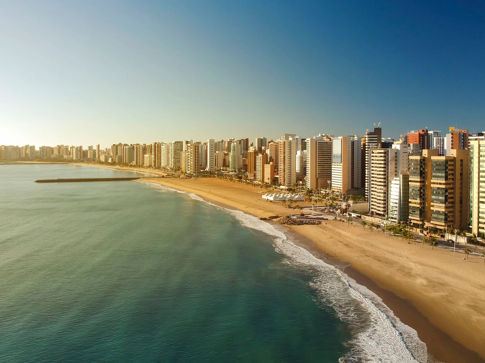
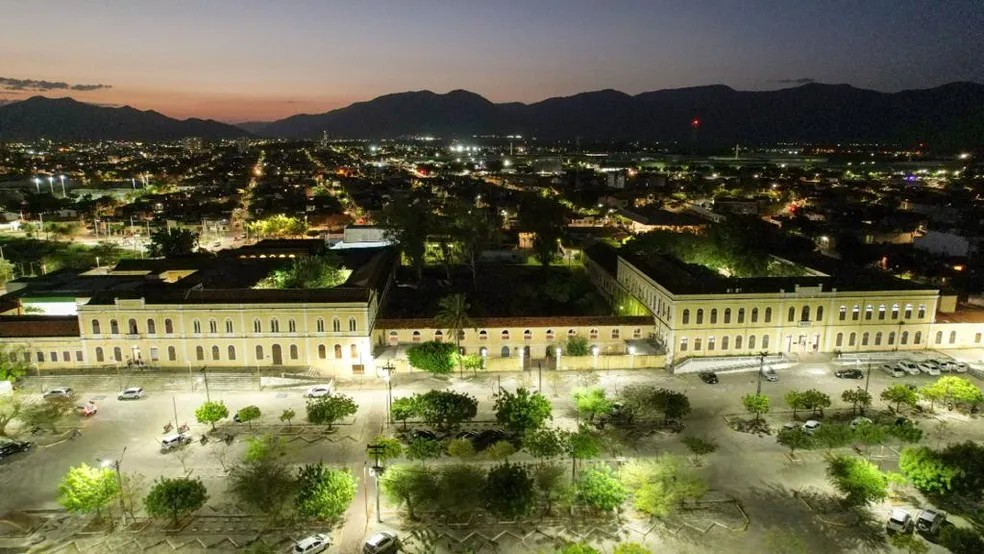

Sobre Mim
Meu nome é Wanderson, tenho 33 anos de idade, sou natural de Fortaleza-CE. Atuo na área bancária a aproximadamente 10 anos, sou casado a 6 anos.
Formação
Cursei Ciências Contábeis na Universidade Estadual do Vale do Acaraú na cidade de Sobral-CE concluindo o curso no ano de 2013. Possuo MBA em Planejamento tributário e atualmente curso Tecnólogo em Análise e Desenvolvimento de Sistemas.
Portfólio
Uma das atividades realizadas no decorrer do curso consiste em desenvolver um software que levará informações ao público visitante ou permanente de praias localizadas em municípios no Estado do Ceará prestando auxílio no planejamento de suas atividades e rotinas que envolvem aquele ambiente. Para uma visão completa da plataforma acessar o arquivo com o trabalho completo pelo link abaixo:
Baixar arquivo